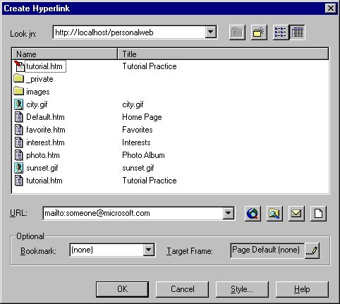

| ||||
In Lesson 1, you learned how to create simple hyperlinks from text on a page that point to other pages in your FrontPage-based Web site. Aside from connecting pages within your FrontPage-based Web site, a hyperlink can also open pages on the World Wide Web or interact with other programs such as an electronic mail application or a newsgroup reader.
In the steps below, you will create a text hyperlink that launches an e-mail form on the user's computer when the user clicks the hyperlink in a Web browser. This type of hyperlink is useful to request feedback from the people that view your FrontPage-based Web site after it has been published.
The FrontPage Editor supports standard Windows selection shortcuts.
Figure 1. The Create or Edit Hyperlink button
Toolbar buttons offer convenient shortcuts to FrontPage menu commands.
Figure 2. The E-Mail button
Your personal e-mail address was established for you by your Internet Service Provider when you first obtained your connection to the Internet.

Figure 3. The Create Hyperlink dialog box
The URL field in the Create Hyperlink dialog box should now contain "mailto:someone@microsoft.com" (where the example shown here should be your real e-mail address on your screen).
The word "feedback" has changed text color and is now underlined to indicate the hyperlink.
Later in this lesson, you will view the Tutorial Practice page in a Web browser, where you will be able to test the hyperlink you created here.
Figure 4. The Save button
The page is saved to the current FrontPage-based Web site.
Did you find this material useful? Gripes? Compliments? Suggestions for other articles? Write us!
© 1999 Microsoft Corporation. All rights reserved. Terms of use.